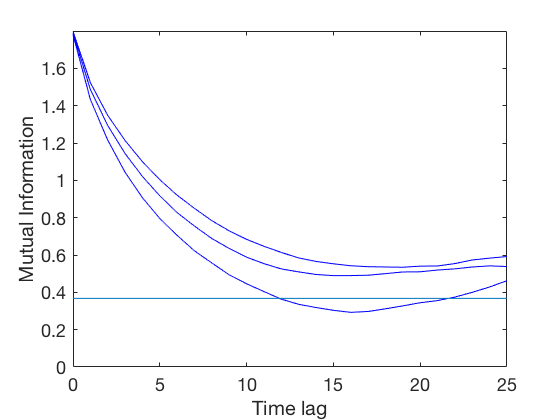
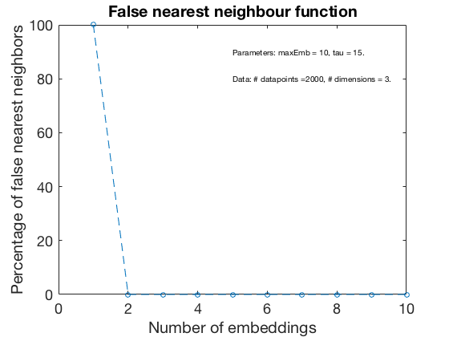
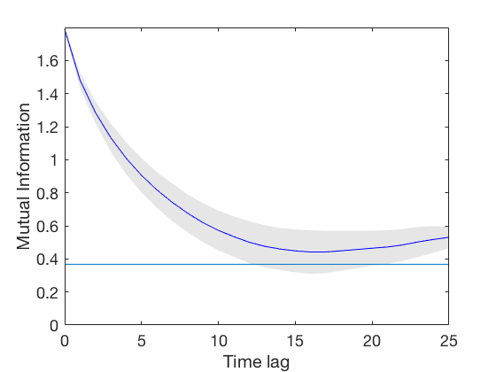
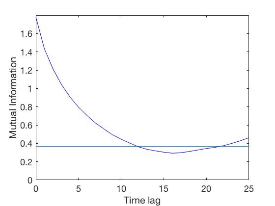
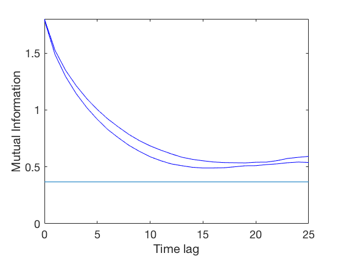
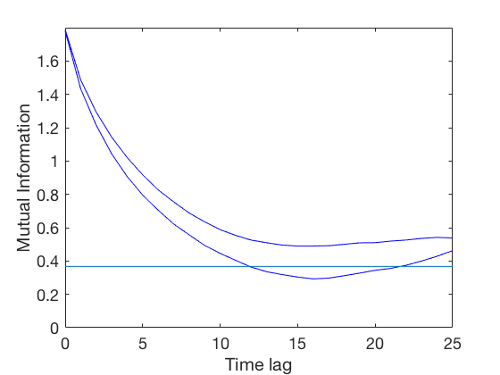

Using mdDelay() and mdFnn() to estimate embedding of the Lorenz attractor
This file contains examples of how to use the functions mdDelay and mdFnn on example data from the Lorenz equations. This script was used to produce Figure 2 in the article.
Contents
- Load the data and set font size for plots
- Estimate time delay and plot AMI using all variables (Figure 2a in article)
- Estimate the embedding dimension (Figure 2b in the article)
- Alternative method to find time delay using first local minimum criterion
- Plot the average AMI and standard deviation
- Time delay and plot only the x-variable
- Time delay and plot only the y-variable
- Time delay and plot only the z-variable
- Time delay and plot x and y variables
- Time delay and plot x and z variables
- Time delay and plot y and z variables
Load the data and set font size for plots
data = load('lorenz_3d_timeseries.txt');
fontSize = 18;
Estimate time delay and plot AMI using all variables (Figure 2a in article)
tau = mdDelay(data, 'maxLag', 25, 'plottype', 'all'); set(gca,'FontSize',fontSize,'fontWeight','normal') disp('xyz: tau = ' + string(tau)) print('Figure2a','-dpng')
No value below threshold found. Will use first local minimum instead No value below threshold found. Will use first local minimum instead xyz: tau = 15.3333
Estimate the embedding dimension (Figure 2b in the article)
figure() [fnnPercent, embeddingDimension] = mdFnn(data, round(tau)); set(gca,'FontSize',fontSize,'fontWeight','normal') print('Figure2b','-dpng')
Alternative method to find time delay using first local minimum criterion
tau = mdDelay(data, 'maxLag', 25, 'plottype', 'all', 'criterion', 'localMin'); set(gca,'FontSize',fontSize,'fontWeight','normal') disp('xyz: tau = ' + string(tau))
xyz: tau = 16.6667
Plot the average AMI and standard deviation
tau = mdDelay(data, 'maxLag', 25, 'plottype', 'mean'); set(gca,'FontSize',fontSize,'fontWeight','normal') disp('xyz: tau = ' + string(tau))
No value below threshold found. Will use first local minimum instead No value below threshold found. Will use first local minimum instead xyz: tau = 15.3333
Time delay and plot only the x-variable
tau = mdDelay(data(:,1), 'maxLag', 25, 'plottype', 'all'); set(gca,'FontSize',fontSize,'fontWeight','normal') disp('x: tau = ' + string(tau))
No value below threshold found. Will use first local minimum instead x: tau = 19

Time delay and plot only the y-variable
tau = mdDelay(data(:,2), 'maxLag', 25, 'plottype', 'all'); set(gca,'FontSize',fontSize,'fontWeight','normal') disp('y: tau = ' + string(tau))
No value below threshold found. Will use first local minimum instead y: tau = 15

Time delay and plot only the z-variable
tau = mdDelay(data(:,3), 'maxLag', 25, 'plottype', 'all'); set(gca,'FontSize',fontSize,'fontWeight','normal') disp('z: tau = ' + string(tau))
z: tau = 12
Time delay and plot x and y variables
tau = mdDelay(data(:,1:2), 'maxLag', 25, 'plottype', 'all'); set(gca,'FontSize',fontSize,'fontWeight','normal') disp('xy: tau = ' + string(tau))
No value below threshold found. Will use first local minimum instead No value below threshold found. Will use first local minimum instead xy: tau = 17
Time delay and plot x and z variables
tau = mdDelay(data(:,[1,3]), 'maxLag', 25, 'plottype', 'all'); set(gca,'FontSize',fontSize,'fontWeight','normal') disp('xz: tau = ' + string(tau))
No value below threshold found. Will use first local minimum instead xz: tau = 15.5

Time delay and plot y and z variables
tau = mdDelay(data(:,2:3), 'maxLag', 25, 'plottype', 'all'); set(gca,'FontSize',fontSize,'fontWeight','normal') disp('yz: tau = ' + string(tau))
No value below threshold found. Will use first local minimum instead yz: tau = 13.5